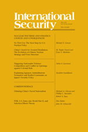

收录于合集

简介
【作者简介】 詹姆斯•阿克顿 (James M. Acton) ，卡内基国际和平研究院核政策项目联席主任及资深研究员，同时也是核安全工作组（Nuclear Security Working Group）成员。他曾担任新一代美俄军控工作组（Next Generation Working Group on U.S.-Russia Arms Control）的联席主席，也是深度裁军挑战委员会（Commission to Challenges to Deep Cuts）的成员。主要研究核威慑、裁军、不扩散以及核能等问题。
【编译】 褚峰熠
【校对】 杨艺华
【来源】 International Security __ Volume 43 | Issue 1 | 2018
【期刊简介】

** International Security** ** __** ，成立于1976年，由哈佛大学贝尔弗科学和国际事务中心编辑，麻省理工学院每年出版四次。根据“期刊引文报告”，该杂志2014年的影响因子为4.455，在85个“国际关系”期刊中排名第一。
【期刊网址】
https://www.mitpressjournals.org/loi/isec
****一、核心观点
非核武器对位于太空基地或其他距冲突地区遥远的地方的 C3I系统 造成越来越强的威胁。这种核能力和非核能力之间的“纠缠”，使中、俄同美国之间互相进行非核打击，而这种意外的冲突增加了使用核武器的可能性。 其中，这种武器升级的压力可能是 由 危机 的 不稳定 性 或两个新确定的机制之一（ “被误解的警告”或“限制损害的机会”）引发的。
美国预警系统双重用途的弱点为这种风险提供了具体的证明。 其中，有两个原因可以说这些风险是严重的。第一，在一个传统的对美作战的环境中，中国或俄罗斯可能会有强烈的动机对美国的预警系统发射动能武器。第二，即使是有限的打击，也可能削弱美国监视敌方核攻击的能力。 **此外，对双重用途预警系统的网络干预，将造成目标把网络间谍误解为破坏性攻击的额外危险。然而，由于国家间政治关系的原因，目前来看，减少纠缠造成升级的风险的唯一可行起点是采取单边措施。各国内设立减少风险小组，认识并提高对风险的认知，同时，策略性地发表声明，强调风险，以阻止对 C3I的攻击。在技术上，重视太空基地的作用，建立更具弹性的C3I体系结构。**从长远来看，例如对威胁行为协商限制这样的单边措施，可能会为更具挑战性的合作措施奠定基础。
****二、有关纠缠的技术和学说动因 ** ******
纠缠描述了核领域与非核领域间的相互作用。自冷战结束以来，由于军事技术和军事理论的四种趋势，纠缠明显增加了，而且实际上还在增加。下面是四种趋势的详细解释。
1.日益增长的技术威胁
******武器方面的深刻变化大大增大了对各国 C3I资产的非核威胁，在一定程度上也增大了对其核力量的威胁。**这些变化包括部署两种全新的武器：网络武器(可能威胁到C3I能力和核力量)和非核战略弹道导弹防御系统(发射后可以拦截核武器)。 现有非核武器类型的效力也有了显著提高。 例如，虽然美国和苏联在冷战结束前都有能在没有核武器的情况下瞄准卫星，但非核反卫星武器——包括动能武器和非动能武器——如今构成的威胁要大得多。 高精度常规武器也有了很大改进，包括采用卫星制导弹药武器。 在未来的几十年里，所有这些武器类型都有望得到进一步的实质性改进，并且包括远程高超声速武器在内的全新非核武器类型可能会得到部署。
2.C3I能力 日益增长 的脆弱性
使能技术的变化加剧了参与核作业的 C3I系统日益脆弱的情况(无论这些资产是双重用途还是非双重用途)。首先，数字网络已经变得无处不在，创造了网络干扰的可能性。其次，美国至少为了降低成本，在使能系统中追求更大的共同性，例如卫星信号接收器就与不同的核武器运载系统相关联。然而，这一发展可能加大网络风险，例如，如果公共接收器中存在一个设计缺陷，使其易受网络攻击的影响，那么所有使用接收器的核武器运载系统都可能受损。第三，至少对于美国的核C3I系统来说，造成这种日益严重的脆弱性的另一个原因是减少了冗余。作者将冷战结束前后美国用于发送使用核武器的卫星系统（国防卫星通信系统和空军卫星通信系统）与当今美国拥有的太空系统作对比，将曾经的用于核发射的数十颗卫星与当今的四颗超高频卫星作对比，以美国曾经运行的两个独立的与潜艇进行通信的无线电天线网络中，有一个可以利用美国大陆的两个极低频天线提供全球覆盖的网络已经被关闭为例，旨在说明尽管剩余资产的现代化可能会使它们在核战争的异常紧张的条件下更有效地运作，但总体上的冗余损失，即预算压力的后果，似乎使美国的核C3I系统对非核攻击的抵抗力降低。
3. 对 C3I双重使用日益增长的的依赖性
**美国的核 C3I系统一直在使用一些双重用途系统，并且越来越依赖于这些系统，这增加了它在非核冲突中受到攻击的可能性。**例如，美国从未部署过专门用于核作业的通信卫星。今天，“军事星”（Milstar）卫星和“先进极高频”（aehf）卫星是美国与核用户和非核用户进行通信的最安全的空间手段。事实上，这些卫星传输的绝大多数数据几乎肯定与非核作业有关。因为对手很难以非破坏性的方式干扰这些卫星的运行（例如，干扰），它们可能成为常规冲突中的直接攻击目标。从冷战的最后十年开始，美国增加了对双重用途系统的依赖，将非核角色分配给过去仅用于核作战的C3I系统。 此外，作者认为俄罗斯的核 C3I系统可能包括一些双重用途资产。中国陆基核导弹和常规导弹通信系统重叠的程度一直是分析人士争论的主题。
4.日益增长的学说理论威胁
**中国、俄罗斯和美国的军事理论似乎设想攻击 C3I的太空和陆基资产，包括两用资产，以进一步实现常规作战目标。**这一战术在美国的“空战”概念中得到了明确阐述。与此同时，美国公开表示担心中俄两国都试图让美国的C3I卫星处于危险之中，以支持破坏美国常规作战的潜在努力。特别是美国情报机构强调了这两个国家对美国早期预警卫星的威胁。此外，中国专家公开主张有能力攻击美国的预警卫星。同样，俄罗斯专家表示，在常规冲突中，莫斯科将考虑攻击美国的C3I系统，包括地面预警雷达系统。
****三、升级的途径： 在 动力冲突 方面 纠缠的影响 ** ******
纠缠不断增加的后果之一是可能对对手的核力量或其授权能力进行“偶然攻击”。一个国家打击对手的双重用途系统，以影响常规冲突的结果，但在此过程中，无意中降低了其核能力。在打击双重用途的C3I能力过程中，特别是通信和预警资产，可能是最重要的附带攻击类型。同时，附带攻击也可能来自于对双重用途武器运载平台的打击，如飞机和导弹。
在很大程度上，偶然的攻击可能升级的原因是被攻击的目标实际上并不能将其与蓄意攻击区分开来 。 在此，作者介绍了三种方式以说明实际或威胁到的附带攻击可能会无意中引发冲突升级。这三种方式分别是被误解的警告、限制损害的机会和危机的不稳定 性 。
1. **被误解的警告 **
在两个拥核国家间的常规战争中，以常规作战的目标为动机，以非核武器攻击对手的双重用途使能为路径，可能与为使用核武器来准备战舰空间的行动无法区分。 因此，国家即使是在以有限的核打击为目标的情况下，也要减轻甚至避免潜在的灾难性代价。
作者认为，在评估错误预警的升级风险时，会出现两个问题。 第一，该目标有多大可能把对双重用途 C3I系统的非核打击解释为使用核的前提准备？第二，如果目标真的担心它很快会受到核打击，它是否有可能以催化冲突升级的方式作出反应？
首先，作者在这里讨论了可能如何发生误解警告的情况。 美国政府相信在常规冲突中，俄罗斯可能选择使用有限的核武器，以迫使美国放弃使用核武器。这是一种被称为 “从升级到降级” 的策略。因为如果有限的核战争升级，俄罗斯可能会对美国核力量发动大规模的破坏限制打击（即使这样的打击不能剥夺美国如今的第二次打击能力）。 这些信念可能会让华盛顿误解为俄罗斯对美国双重用途武器进行附带打击，为使用核武器作准备。作者站在美国的立场上，从三个方面指出美国会考虑的问题。首先，俄罗斯可能会攻击美国的地面或太空预警资产，以击败欧洲的导弹防御系统。第二，俄罗斯可能攻击美国的双重用途通信武器，以破坏美国的各种非核行动。第三，除非美国让步，否则俄罗斯对美国双重用途预警或通信武器的攻击将有可能被视为俄罗斯决心使用核武器的信号。 而在具体情境中，美国会考虑如下问题：俄罗斯是否提高了其核力量的警戒水平，解开了他们，甚至发布了命令，让他们为核作业做好准备？莫斯科是否制定了行动计划，试图在发生核战争时确保政府的连续性？政府向本国人民传达了什么信息？如果输掉了战争，政府会不会受到内部威胁？但实际上，当俄罗斯攻击美国的双重用途预警和通信武器时，它可能已经启动了。在没有完全信息的情况下，美国可能会觉得最谨慎的做法是假定俄罗斯的意图是最坏的。
相比于俄罗斯，美国将中国对美国双重用途资产的非核打击误解为为使用核武器做准备的风险可能较低。首先，与莫斯科形成鲜明对比的是，北京方面采取了不首先使用核武器的承诺。第二，与俄罗斯领导人不同的是，中国领导人相信，首先使用核武器不会有意义地降低其将在与美国的对抗中遭受的核损害。 因此，美国不太可能将中国的非核打击解读为打赢一场战略核战争做准备。但是在这里，作者认为，在对中国来说不太有利的条件下，美国仍然可以将中国针对其预警系统的攻击解释为准备进行有限的核打击，以恐吓美国终止冲突。在此，作者以台湾问题为例，如果中国在台湾问题上输掉战争，中国可能会放弃不首先使用核武器的承诺。如果中国袭击了美国关键的预警系统卫星，特别是为了帮助美国的常规弹道导弹穿透美国的防御系统，华盛顿可能会认为，中国领导人正在针对美国或地区目标准备有限的核打击。如果中国除了攻击美国的双重用途支援能力之外，还解开或警告了核武导弹，警告被误解的可能性可能会增加。
其次，作者论述了美国如何应对警告被误解的情况。 美国对警告被误解的反应可能取决于一系列因素，包括对对手使用核武器的可能性的评估。其中最重要的考虑是阻止这种核武器的使用，或者如果威慑失败，尽可能降低美国在核战争中的损失。在这里，作者认为被错误解读的警告可能导致美国作出三种反应（所有这些都不是相互排斥的，且都可能引发进一步升级）。首先也是最直接的，美国可能会寻求保护其核C3I系统中幸存的元素，因为它们对限制损害的努力很重要，其中包括反武力攻击和导弹防御行动。第二，被误解的警告可能会促使美国向轰炸机发出警报，并向海上增派弹道导弹潜艇(SSBN)。第三，美国可能威胁甚至使用核武器来回应被误解的警告。甚至美国有可能通过使用核武器直接回应对双重用途C3I武器的攻击，而不首先发出核威胁。
2. 限制损害的机会
有限制损害原则的国家在一场冲突开始的时候只有一扇狭小的机会之窗，可以试图攻击对手的核力量，并防御任何它未能摧毁的东西。由于担心这个限制 损 坏的窗口可能关闭 ， 政府 会 先发制人地进行反力打击，或者发起积极的军事行动，试图保留之后进行限制 损害 行动的选择。 即使这两个国家都不相信它的对手目前正准备使用核武器，也可以感觉到核风险，于是，由于担心限制损害窗口关闭，两个核武装国家之间的战争最终可能会变成核战。
C3I能力对限制损害行动非常重要，其中攻击分散的移动导弹尤其具有挑战性。作者认为在没有高质量的ISR来探测和跟踪导弹的情况下，伴随着快速可靠的通信来中继目标数据，他们肯定会失败。美国对敌方SSBN（战略核潜艇）的反潜作战也将受益于先进的启用能力。如果美国的飞机、水面舰艇和攻击潜艇的行动得到协调，如果这些平台能够共享信息，那么高带宽的通信就会受到重视，也就更有可能成功。同时，早期预警能力将使美国洲际弹道导弹(有可能使美国瞄准俄罗斯持有的任何核力量)能够在被俄罗斯大规模的核打击摧毁之前发射。有人担心，对C3I资产的核威胁可能通过威胁排除限制损害而造成升级压力。今天，这种升级的风险因这种资产在常规战争过程中由于附带攻击的退化而扩大。 在极端情况下，美国可能会先发制人地发动反武力攻击，而它的 C3I能力仍然完好无损。在不那么极端的情况下，它可能会发动升级的军事行动，从而保留之后进行反武力行动的选择。
3.危机的不稳定性
危机 的 不稳定性可能是 由 对一国核力量的生存或其启用能力的威胁造成的。（在一般政治学文献中， “危机 的 不稳定 性 ”常常在某种意义上被用来描述在危机中使用武力的趋势） 在冷战时期，分析人士普遍认为，如果危机不稳定导致首先使用核武器，这种使用形式将是大规模先发制人的第一次打击。作者认为，如果一个国家可以通过散布移动武器来提高其核力量的生存能力，为了吓唬对手不要威胁其核力量，一国可能威胁使用核武器，甚至以有限的方式使用核武器，所有这些措施都可能引发进一步升级。
**俄罗斯已发展了各种能力，以提供对核攻击的早期预警 ——武装弹道导弹。这种能力的潜在目的是使一个国家能够在核武器被销毁之前发射核武器。**一般认为俄罗斯的核理论包括这样一个被称为“攻击下发射”或“警告发射”的选择。另外，俄罗斯有广泛的防空系统，它在保护其核力量和相关的C3I能力免受美国飞机和巡航导弹的核或非核攻击威胁方面发挥着重要作用。
至少有 下述 三种类型的中国或俄罗斯的预警资产已经或可能被纠缠在一起。 由此，其 可能会受到来自美国的偶然攻击，随之带来危机不稳定风险。
首先，美国可能会瞄准中国或俄罗斯的少量超视距雷达，它能在比传统的视距雷达更远的距离上探测到一些威胁。 如果在常规冲突中攻击这些雷达，中国和俄罗斯会担心这会对他们的核力量的生存能力构成严重威胁。
第二， **分析师似乎完全没有注意到的一个更严重的升级风险是对 BMEWR的附带攻击——特别是俄罗斯的雷达网络。**这些双重用途雷达可能是俄罗斯最重要的资产，可用于感知高度达几千公里的太空态势，从而使俄罗斯能够让许多美国卫星处于危险之中。因此，美国可以打击这一网络，以保护其卫星。鉴于俄罗斯对受攻击后发射的依赖，这类袭击可能造成严重的不稳定危机。同时，中国和俄罗斯的BMEWR一般都无法追踪美国的大多数非核武器，比如飞机和巡航导弹(尤其是因为这类武器的飞行高度相对较低)。同时，美国正在考虑购买远程非核武器弹道导弹，这些导弹可以对BMEWR进行跟踪。如果美国决定部署非核武器弹道导弹，在冲突中，它可能会攻击这样的雷达，以压制中国或俄罗斯的防御。
第三， 美国对俄罗斯或可能 存在的 中国早期预警卫星的打击在未来可能变得更加可信。 自2015年11月以来，俄罗斯已经部署了两颗卫星作为基于太空的新预警系统的一部分，并且计划到2020年部署“大约十个”。由此看来，俄罗斯可能会大大增加对太空预警的依赖。与此同时，美国国防部评估说，中国也有兴趣购买预警卫星。目前，俄罗斯和可能存在的中国卫星对非核军事行动的贡献可能不足以使它们成为美国附带打击的合理目标。然而，如果美国部署无核武器弹道导弹或高超音速助推滑翔武器，这样的卫星可以追踪到什么，这种计算就可能会改变，从而产生更多的危机不稳定性的潜在导火索。
4. 剩余的升级
被误解 的警告、限制 损害机会 和危机 的 不稳定 性 并不是相互排斥的。多重升级压力可能同时出现，甚至相互影响。 也就是说，要在任何道路上发生升级，就必须满足特定的技术和理论条件。每一种机制都涉及一个“攻击者”，对一个“目标”发动或威胁非核攻击。目标必须具备一些条件，才能承受使冲突升级的压力。另一些则是贡献性的，因为它们增加了升级的可能性，但即使它们没有实现，升级也可能发生。例如，目标必须具有双重使用的C3I能力，这些能力必须受到攻击或威胁，才会发生警告被误解的情况。
****四、预警：技术的脆弱性及其后果 ** ******
在评估上述风险升级的严重性时，会出现两个问题。首先，核C3I涉及的资产对非核作战有多重要?他们越重要，就越有可能在常规冲突中受到威胁或攻击。其次，对双重用途授权能力的打击会严重削弱目标发动核战争的能力吗?如果目标的核C3I系统具有很强的弹性，有限的打击对削弱其整体效力几乎没有什么作用，那么附带打击的升级风险可能会很小。相比之下，如果失去一些关键的授权资产（在最坏的情况下，只有一项），严重削弱了目标进行核行动的能力，升级的可能性就更大。
本节说明美国的预警系统已深深融入其常规行动，即使是有限的打击也可能大大降低其效力，从而造成严重的升级风险。另外，作者还考虑了网络干扰中国、俄罗斯和美国双重用途预警能力的风险，这些风险与动力打击可能造成的风险有一些重要的区别。
1. 对美国太空预警系统的威胁
2018年，美国完成了基于空间的 红外系统 (SBIRS)（此卫星利用星上探测器探测、发现、识别和追踪弹道导弹发射，为美国及其盟国提供弹道导弹攻击的早期预警信息，为低轨导弹预警卫星和地基预警反导系统提供目标 8 指示数据） 的部署，以取代传统的基于空间的预警防御支持计划系统。SBIRS星座由六颗卫星组成，4颗专用的SBIRS GEO卫星处于地球静止轨道，在赤道附近定点上空约36，000公里处。此外，为了覆盖北极地区，另外两个SBIRS HEO探测器由“分类”卫星托管，据报道，其主要目的是在高度椭圆轨道上收集电子情报。这些卫星的大部分轨道位于北半球，纬度高达65°N。
在常规冲突中，敌手可能至少有两个重大动机来对美国的SBIRS卫星发起附带攻击。 **首先，据报道，携带 SBIRS HEO探测器的电子情报收集卫星的轨道非常适合监测俄罗斯北部的军事活动，使他们成为潜在的目标。**莫斯科攻击他们的一个特别强烈的动机可能是干扰美国收集俄罗斯位于北极圈内的北方舰队水面舰艇和潜艇移动情报的努力。在这样的打击中，SBIRS HEO探测器将是附带的损害。 **第二，中国或俄罗斯可以瞄准 SBIRS卫星，因为它在非核操作方面扮演着重要角色。**这类卫星最重要的功能是提供非核弹道导弹的预警和防御信号。一般来说，被攻击的卫星越多，美国的防御能力就会越差 **。 SBIRS卫星参与了包括“情报收集”和“战舰空间特征”的其他非核任务，包括“作战损害评估、对敌方防空的压制、对敌机的监视”。**在少数情况下，这些辅助功能足以激励敌方发起附带攻击。例如，中国可能会攻击SBIRS卫星，因为它们能够在飞行早期探测到非核弹道导弹，从而提供美国发现在寻找移动发射器发射这类导弹方面有用的目标数据。
**中国和俄罗斯可能会在常规冲突中攻击 SBIRS卫星，而样的攻击即使是有限，也可能会对美国监控对手核武器弹道导弹发射的能力产生严重的负面影响。**有了六颗卫星，即使在剩余的国防支援计划卫星退役后，SBIRS卫星仍可以使核弹头发射的大部分区域在任何时候都能被至少三颗或四颗卫星监控，从而提供了卫星的冗余空间。然而，如果北京或莫斯科在常规冲突中试图削弱美国的导弹防御系统，削弱SBIRS卫星，使其无法监控非核导弹的发射（分别在中国东部或俄罗斯西部），美国也将失去从太空持续监视其大多数对手核力量的能力。
**此外， SBIRS卫星具有一个漏洞：如果任何一台SBIRS HEO探测器无法工作，美国就无法从太空持续监测北极地区。**当只有一个探测器在运行中，美国每天将有超过四个半小时的时间不报道或仅仅部分报道北极地区。从历史上看，监测北极地区一直不是美国的首要任务。据推测，每年都有大量的冰层覆盖在冰层上，因此它并不是一个受欢迎的发射弹道导弹的地方。 然而，随着气候变化 使 北冰洋 覆盖的海冰渐渐减少 ，特别是在夏季，监测北极地区可能变得更加重要。
2. 对美国陆基预警系统的威胁
美国拥有六种陆基预警雷达，主要用于探测针对美国的导弹攻击：位于加利福尼亚州、马萨诸塞州、格陵兰、联合王国和阿拉斯加的五种铺路爪雷达，同时那里也是COBRA Dane雷达的基地。所有这些弹道导弹预警雷达都是大型的、不动的，因此可能容易受到包括空中和海上发射的巡航导弹等精确常规武器的攻击。一般来说，在美国的BMEWR网络中打开一个完整的洞，至少需要销毁两到三个雷达。
尽管美国BMEWRs的主要任务是探测和跟踪第一次核打击，但它们也对两次非核行动做出了重大贡献。 首先，它们在跟踪包括美国卫星、中国和俄罗斯反卫星武器 的空间物体 方面发挥着重要作用。 因此，北京或莫斯科可能会合理地攻击美国BMEWRs，以最大限度地提高反卫星武器行动的效力和后果。第二， 与早期预警卫星一样，美国的 BMEWRs(目前正在升级)有能力为防御非核弹道导弹袭击作出贡献。
美国Fylingdales BMEWR不仅是最有可能受到附带攻击的雷达，也是提供俄罗斯核打击预警的最重要雷达。由于它的基地位于美国大陆的东部，这种雷达可以比其他美国的BMEWR更早地探测到俄罗斯洲际弹道导弹和潜射弹道导弹（SLBM）从大多数部署地区发射的导弹。因此，如果俄罗斯成功地部分或完全摧毁了SBIRS卫星，对Fylingdales雷达的后续攻击可能会升级。展望未来，如果中国或俄罗斯最终研制出非核洲际弹道导弹或单反导弹，那么美国除菲林戴尔（Fylingdales）之外的BMEWRs将在非核导弹防御作战中发挥重要作用，即为附带攻击制定新的目标，从而可能引发升级。
作者认为，即使它不是美国雷达，亚太地区的类似于Fylingdales雷达也可能存在。2013年，台湾推出了一种从美国购买的PATH PAWS预警雷达。台北方面表示，这种雷达的唯一目的是跟踪中国的近程非核弹道导弹。然而，这种雷达确实具有在飞行早期探测中国洲际弹道导弹的能力。事实上，对于中国的洲际弹道导弹袭击，它 可以提供比来自美国的更多的警告 ，且 这一雷达的数据 可 与美国共享 。如果这一说法是正确的，那么中国对雷达的附带打击可能会带来严重的升级后果。可以肯定的是，中国可能会在冲突的早期阶段攻击这一雷达，而战争的结果仍然不确定。在那个时候，升级的风险可能是适度的，因为中国使用核武器的动机将微乎其微。但是，如果中国开始攻击美国的SBIRS卫星，那么攻击预警卫星很可能会因中国早些时候对雷达的攻击而更加严重。
3. 对预警系统的网络威胁
这里使用的 “网络干扰”一词既包括网络间谍活动，也包括网络间谍活动(为情报目的收集信息而不损害目标系统的运作)和网络攻击(试图通过损害其数据的完整性或可用性来破坏目标系统的功能)。
**作者以 2007年以色列摧毁叙利亚秘密钚生产反应堆为例，指出包括网络武器在内的各种工具对预警系统具有威胁。**可以肯定的是，中国、俄罗斯和美国的核C3I网络可能受到了比十年前叙利亚防空系统更好的网络防御措施的保护。尽管如此，这些国家已经开始努力加强用于核C3I的网络防御，这意味着它们相信对这种网络威胁是可信的；事实上，美国军方已经明确表示了这一点。然而，完全消除网络漏洞可能是不可能的，美国国防科学委员会表示，美国国防部“不可能”全面保护其网络。
升级风险的严重程度取决于至少两个因素： 偶然的网络干扰对预警能力的影响。 以及 如果检测到干扰，目标是否正确地评估了攻击者的意图。
即使是在一场温和的常规冲突中，一个国家对敌人的C3I资产进行网络间谍活动的诱惑也可能非常强烈。 在双重用途预警网络的模式中，政府可能会把重点放在发现对手的潜在弱点上，例如不起作用的雷达或性能不佳的雷达，利用它们来进行更有效的进攻行动。这种网络间谍活动只有在目标发现的情况下才会产生升级的后果。在这种情况下，间谍活动可能会 造成错误的 警告，因为目标可能认为其对手是在使用核武器之前寻找其弱点。然而，确切的后果大概将取决于目标相信网络间谍活动揭示了什么。 例如，如果俄罗斯认为美国在预警系统中发现了一个严重的弱点，莫斯科对其核力量生存能力的信心可能会减弱。由此，除了这种误读警告的情况之外，还会造成危机的不稳定性。相反，如果俄罗斯认为美国没有取得任何有意义的东西，那么升级的后果可能要小得多。
旨在通过破坏对手预警能力的行动来促进非核打击的网络攻击也可能导致升级。而且，也只有在目标发现的情况下，攻击才可能会升级。 如果一个国家认定其预警系统受到了网络攻击，特别是认为损害无法迅速扭转的话，升级的后果可能与该系统受到实际攻击一样严重。
目标在确定攻击者意图方面面临的挑战可能进一步加剧升级的风险。 充分理解复杂恶意的软件的目的是困难和耗时的，而且，在相当长的一段时间内，目标可能无法确定自己的能力，这为认定是最坏情况的思维提供了相当大的空间。例如，即使恶意软件只能进行间谍活动，目标也可能担心它还包含一个能够在激活后禁用预警系统的“杀死开关”。而为了制造更多的不确定性，攻击者可能使用一次对网络的渗透来插入多个“有效载荷”。因此，即使目标认为目前的干涉仅限于间谍活动，也可能担心攻击者使用的漏洞会被用于更邪恶的目的(至少在该漏洞被识别和修复之前)。
**归根结底，在网络干扰和对双重用途预警系统的物理攻击所造成的升级风险之间至少有两个重要的区别。首先，对预警资产的物理攻击要比网络干扰难得多 (即使并非所有的物理攻击都同样明显)。**因此，与看似可信的物理攻击不同，对预警系统的网络攻击可能不会被发现，也不会带来升级的后果。 其次， 在 对预警资产的实际攻击 的情况下 ，意外升级的风险来自目标的双重用途性质。有了网络干扰，这种模棱两可的现象将依然存在，但可能会因干扰目的的不确定而变得更加复杂。也就是说 ，即使是有限的网络间谍，如果被发现，可能会被证明是高度升级的。
****五、政策意涵 ** ******
上述的危险很严重，而减少风险也极具挑战性。 中国、俄罗斯和美国不太可能同意对旨在威胁潜在对手 C3I资产的非核能力进行有意义的限制，因为每个国家都认为这种能力对常规作战和威慑都是至关重要的。此外，每一个国家都可能拒绝解除其核力量和非核力量以及C3I资产的纠缠。
然而，北京、莫斯科和华盛顿仍应面对这样一个问题：无论是金融上的还是战略上的，纠缠的好处是否值得承担升级风险。毕竟，如果升级的风险太大，那么战争的可能性及付出的代价的增加将超过任何利益。
在此，作者提出了三条旨在减少核战争风险的对策。
1. 认识并提高对风险的认知
华盛顿、北京和莫斯科的首要任务是进行他们自己的分析，很可能是在分类的基础上，对纠缠的潜在好处和风险进行分析。他们应从情报评估中了解到，潜在对手的核力量和非核力量以及C3I资产在多大程度上纠缠在一起，以及这些竞争对手对被分析的国家的意图和能力的看法。如果这些分析得出的结论是，纠缠的风险确实大于利益，它们可以催化制定一项减少风险战略，并为之提供信息。
在减少风险是单边的还是合作的问题上，作者认为由于华盛顿和北京之间以及华盛顿与莫斯科之间目前的政治关系，单边措施是目前唯一可行的起点。
在这种情况下，最简单的措施将是在政府和军队内部提高对纠缠所造成的挑战的认识，以在对手评估国家的意图时评估对手的意图和目的。提请决策者注意评估意图的困难可能会鼓励在冲突中保持克制，从而有助于抵消无意中的升级压力。提高对风险的认识也可以促进和平时期的准备工作，例如提高C3I资产的生存能力，如果战争发生，这可能会减少附带打击带来的危险。这样的准备工作可以同时减轻限制损坏机会的存在所造成的升级风险(这并不是由对意图的错误判断所驱动)。
为此，中国、俄罗斯和美国可以在其国防设施内设立减少风险小组。最重要的是，在危机或冲突期间，这些小组可以就与纠葛相关的风险以及如何管理这些风险向国家和军事领导人提供咨询意见。在和平时期，他们的任务是确保在新战略武器和 C3I能力的战争规划和购置决定中考虑到升级风险。
高级文职或军事领导人将在考虑到升级风险以及更传统的战略、军事和财政考虑之后负责作出决定。因此，减少风险的团队必须获得官僚授权(例如，由一名适当的高级官员领导)，以确保他们的建议得到听取。这些小组还将受益于由广泛的专家组成的小组，包括对潜在对手的思想有着深刻的了解的平民战略家、军事策划者和情报官员。
2. 声明性政策
**声明性策略是一种通过强调风险来阻止对 C3I资产的附带攻击的策略。**2018年美国核态势评估报告威胁使用核武器回应对核C3I资产的攻击，大概是为了警告潜在的对手这些影响。然而，这种与威胁不成比例的性质，有可能被北京和莫斯科视为虚张声势。相反，稍显含糊的提法最终可能会更有效。例如，华盛顿可以声明，它认为双重用途通信和预警资产是其核C3I系统不可分割的一部分，并将相应地对它们的攻击作出反应(北京和莫斯科可以发表类似的声明)。与所有声明性政策一样，如果非常高级的官员定期重复这些言论，这些言论可能会更有效地影响潜在对手的思维。
3. 迈向更具弹性的 C3I体系结构
一种有 所 **不同的早期预警方法是建立太空基地的潜在能力，而这些能力不太可能受到附带攻击，因为除了探测敌方导弹的发射 (无论是核导弹还是非核导弹)之外，他们无法对任何任务做出重大贡献。**特别是在基本光学方面，物理上较小的红外探测器将无法产生对导弹防御最有用的高分辨率图像和探测移动导弹发射器的准确位置。小型探测器的另一个主要优点是它们不需要自己的卫星巴士(通常设计和制造起来非常昂贵)，而是可以由其他用途的卫星来承载。这样，就有可能大量地部署它们，并创建一个具有抗灾能力的架构，这将是相当于AFSATCOM的早期预警。
例如，如果主机卫星受到攻击以破坏其主要功能，它们相关的预警探测器几乎不可避免地也会被摧毁。可以肯定的是，选择可能不是目标的主机卫星可以降低这种攻击的可能性(如天气或商业非通信卫星)，并通过在轨道上安装多个探测器来减轻攻击的后果。
另外，除了功能更强的专用预警卫星之外，还部署了一个分散的系统（例如SBIRS），可能会增加对手攻击专用卫星的动机(通过减少这样做的升级风险)，而且比单独部署任何一个系统都要昂贵。相反，部署分散的系统而不是专用卫星会降低导弹防御系统的效能。
减少对手对基于太空的通信资产发起附带攻击的动机将更加困难。虽然一个只能以低速率传送数据的系统对核作业比非核作业更有用，但没有任何明显的方式向对手表明这种限制是真实和永久的。相反，降低风险的努力可以侧重于通过增强通信资产的复原力来减轻对基于空间的通信资产的附带攻击的后果。一种方法是通过在数十颗用于其他目的卫星上安装小型通信转发器来创建一个升级版的AFSATCOM(不过，也会出现类似于分散预警系统的权衡)。
****六、总结 ** ******
随着美国-中国和美国-俄罗斯局势的紧张，美国应对大国冲突的升级风险的警告越来越响亮 。然而，这种对理论和技术的关注，在很大程度上掩盖了另一种危险：正在崛起的中国和俄罗斯的战争方式在本质上也是升级的。 由于许多辅助资产是双重用途，因此，在发生冲突时，对它们的攻击可能会造成降低目标的核C3I系统变得难以想象，而危机的不稳定性是一个潜在后果。 **事实上，其风险比一般人所理解的要严重得多，因为以太空为基础或远离潜在的战场的冲突的 C3I资产是可能会受到附带的动力攻击或网络干扰。此外，C3I弱点可能会产生另外两种升级压力——错误解释的警告和损害限制窗口。**在一场重大冲突中对ISR资产（情报、监视与侦察系统）的攻击，将使评估攻击者意图的任务复杂化，并引起对双重用途预警和通信资产后续攻击的关注，从而加剧风险。
在未来，纠缠的程度可能会增加，对双重用途C3I能力的非核威胁也可能变得更加严重。面对这些风险，中国、俄罗斯和美国首先要得出的结论是，纠缠的风险大于利益。 就目前而言，单边减少风险措施 (包括使用声明性策略来强调攻击双重用途C3I资产的风险和开发更具弹性的C3I系统)可能是最有希望的前进之路。建立减少风险小组将有助于使这些努力制度化，并为这些努力提供信息，提高政府和军队内部对风险的认识，从而帮助减轻风险。从长远来看，可以采取合作降低风险的措施，以进一步减轻风险，特别是对双重用途C3I能力的威胁。
注：
C3I系统：“C3I”系统就是指挥自动化技术系统，是用电子计算机将指挥、控制、通信和情报各分系统紧密联在一起的综合系统。 因为指挥（ command）、控制（control）、通信（communication）的英文第一个字母都是C和情报（intelligence）的第一个英文字母是I，所以西方国家又把它简称为“C3I”系统。
双重用途的C3I能力：例如，美国公开承认其预警卫星和雷达能够对 核打击 进行预警，并且能够触发防御机制，以拦截常规洲际导弹 （或执行其他非核任务） 。
点击 阅读原文 可获取全文pdf版！
**
**
更多阅读：
**【FA杂志】自由主义秩序的神话——历史偶然到传统观念的演变
**
**【外文编译·IS杂志】中美在东南亚的竞争
——权力转移还是竞争共存？
**
【外交事务】海伦·米尔纳：罗伯特·吉尔平的遗产对今天国际政治的启示
**
**